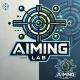
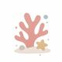
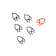

An Omni-Modal Omni-Discipline AI Scientist

AutoResearchClaw
Self-Reinforcing Autonomous Research with Human-AI Collaboration

CORAL
Towards Autonomous Multi-Agent Evolution for Open-Ended Discovery
Towards Multi-Agent Evolving AI Scientists for End-to-End Scientific Discovery
AI Accelerates AI
Toward Ultra-Long-Horizon Agentic Science: Cognitive Accumulation for Machine Learning Engineering
An AI Scientist for Autonomous Discovery
The Denario project: Deep knowledge AI agents for scientific discovery
The AI-XR Co-Scientist That Sees and Works With Humans
Advancing Frontier-Pushing Scientific Findings Progressively

ShinkaEvolve
Towards Open-Ended And Sample-Efficient Program Evolution
Self-Evolving LLM Agent for Biomedical Research
A coding agent for scientific and algorithmic discovery
Machine Learning Engineering Agent via Search and Targeted Refinement
A multi-agent system for automating scientific discovery
Open-Ended Evolution of Self-Improving Agents
An Autonomous Agent for Quantum Chemistry
Workshop-Level Automated Scientific Discovery via Agentic Tree Search
A Concept-Driven Physical Law Discovery System without Prior Physical Knowledge
Accelerated Inorganic Materials Design with Generative AI Agents
Using LLM Agents as Research Assistants
Moving Towards Closed-loop Auto-research through Thinking, Practice, and Feedback
Improving Automated Research via Automated Review
Kolb-Based Experiential Learning for Generalist Agents with Human-Level Kaggle Data Science Performance
A Multi-Agent Framework for Autonomous Data Science Competitions
A Multi-Agent LLM Framework for Full-Pipeline AutoML
Towards Fully Automated Open-Ended Scientific Discovery
Autonomous Machine Learning Research based on Large Language Models Agents
Alloy design and discovery through physics-aware multi-modal multi-agent artificial intelligence
Autonomous LLM-driven research from data to human-verifiable research papers
CRISPR-GPT for Agentic Automation of Gene-editing Experiments
Automated Data Science by Empowering Large Language Models with Case-Based Reasoning
Protein discovery via large language model multi-agent collaborations combining physics and machine learning
A Robotic Assistant for Automated Chemistry Experimentation and Characterization
Mathematical discoveries from program search with large language models
Nothing matches those filters.